전기공사산업기사 (2008-09-07 기출문제)
1과목: 전기응용
1. 관성 모멘트가 75[kg·m2]인 회전체의 GD2은 몇[kg·m2]인가?
- 75
- 150
- 200
- 300
(정답률: 56%)

2. 교류 전기차의 속도제어에 해당되는 것은?
- 저항제어
- 직병렬 전압제어
- 계자제어
- 탭절환 제어
(정답률: 42%)
3. 유도전동기를 기동하여 각속도 ωs에 이르기까지 회 전자에서의 발열손실을 Q를 나타낸 식은? (단, J는 관성모멘트이다.)
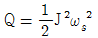
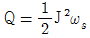
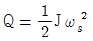
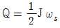
(정답률: 82%)
4. 다음의 소자 중 쌍방향성 사이리스터가 아닌 것은?
- DIAC
- TRIAC
- SSS
- SCR
(정답률: 77%)
5. 전기 가열의 특징에 해당되지 않는 것은?
- 내부 가열이 가능하다.
- 열효율이 매우 나쁘다.
- 온도제어 및 조작이 간단하다.
- 방사열의 이용이 용이하다.
(정답률: 79%)
6. 충분히 방전했을 때 양극판의 빛깔은 무슨 색인가?
- 황색
- 청색
- 적갈색
- 회백색
(정답률: 73%)
7. 평균 구면 광도 100cd의 전구 5개를 지름 10m의 원형의 방에 점등할 때 조명률 0.5, 감광 보상률 1.5라하면 방의 평균 조도[lx]는 약 얼마인가?
- 27
- 35
- 48
- 59
(정답률: 52%)
8. 전기적 절연물을 직접 가열하는데 사용되는 방식으로 고주파 전계 중에 점연성 피열물을 놓고 여기서 생기는 유전체손을 이용하는 가열 방식은?
- 유전가열
- 유도가열
- 저항가열
- 적외선가열
(정답률: 82%)
9. 서보 전동기는 서보기구에서 주로 어느 부의 기능을 맡는가?
- 검출부
- 제어부
- 비교부
- 조작부
(정답률: 71%)
10. 전차용 전동기에 보극을 실시하는 이유는?
- 진동 방지
- 역회전 방지
- 섬락 방지
- 불꽃 방지
(정답률: 70%)
11. 저항 용접에 속하지 않은 것은?
- 맞대기 저항용접
- 아크용접
- 불꽃용접
- 점용접
(정답률: 83%)
12. 자동제어 분류에서 제어량에 의한 분류가 아닌 것은?
- 추종제어
- 자동조정
- 프로세스제어
- 서보기구
(정답률: 54%)
13. 복사속의 단위는?
- 스테라디안[Sr]
- 와트[W]
- 루우멘[lm]
- 캔들[Cd]
(정답률: 71%)
14. 2차 전지에 속하는 것은?
- 공기전지
- 망간전지
- 수은전지
- 연축전지
(정답률: 77%)
15. 전광속 F, 양단면에 빛이 없는 등휘도 완전확산 원주 광원의 원주축과 θ의 각도를 이루는 방향의 광도는?
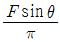
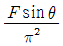
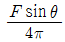
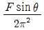
(정답률: 49%)
16. 반지름이 1500m인 곡선궤도를 시속 120km/h인 열차가 주행하기 위한 고도[mm]는 약 얼마인가? (단, 궤간은 1435mm이다.)
- 25.4
- 51.5
- 84.0
- 108.5
(정답률: 72%)
17. 전동기에 진동이 생기는 원인에 해당되지 않는 것은?
- 회전자의 정적 및 동적 불평형
- 베어링의 불평등
- 회전자 철심의 자기적 성질의 불균등
- 고조파 자계에 의한 동력의 평형
(정답률: 74%)
18. 반사율 50%의 완전 확산성의 종이를 100lx의 조도로 비추었을 때 종이의 휘도 B[cd/m2]는 약 얼마인가?
- 8
- 16
- 20
- 28
(정답률: 58%)
19. 다음 광원 중 루미네선스에 의한 발광현상을 이용하지 않는 것은?
- 형광 램프
- 수은 램프
- 할로겐 램프
- 네온 램프
(정답률: 69%)
20. 알루미늄 마그네슘의 용접에 가장 적당한 용접 방법은?
- 텔밋 용접
- 서브머지드 아크 용접
- 원자 수소 용접
- 불활성가스 아크 용접
(정답률: 78%)
2과목: 전력공학
21. 3상용 차단기의 정격 차단 용량은?
- 정격 전압 x
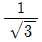
정격 차단 전류  x 정격 전압 x 정격 전류
x 정격 전압 x 정격 전류 정격 전압 x
정격 전압 x 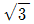
정격 차단 전류 x 정격 전압 x 정격 차단 전류
x 정격 전압 x 정격 차단 전류
(정답률: 43%)
22. 전력 원선도에서 알 수 없는 것은?
- 전력
- 손실
- 역률
- 코로나 손실
(정답률: 35%)
23. 평균 발열량 5000kcal/kg의 석탄을 이용하여 종합효율 25%의 열효율을 내는 화력발전소가 있다. 이 발전소에서 10억kWH의 전력량을 발생시키려면 석탄의 양은 몇 톤이 필요하겠는가?
- 388000
- 488000
- 588000
- 688000
(정답률: 26%)
24. 유효저수량 100000m3, 평균 유효낙차 100m, 발전기출력 5000kW 1대를 유효저수량에 의해서 운전할 때 약몇 시간 발전할 수 있는가? (단, 수차 및 발전기의 합성효율은 90%이다.)
- 2
- 3
- 4
- 5
(정답률: 16%)
25. 발전기나 변압기의 내부 고장검출에 주로 사용되는 계전기는?
- 계자상실계전기
- 과전압계전기
- 비율차동계전기
- 선택계전기
(정답률: 40%)
26. 수전단 전압이 송전단 전압보다 높아지는 현상을 무엇이라 하는가?
- 페란티 효과
- 표피 효과
- 근접 효과
- 도플러 효과
(정답률: 44%)
27. 동일한 전압에서 동일한 전력을 송전할 때 역률을 0.8에서 0.9로 개선하면 전력손실은 약 몇 % 감소하는 가?
- 5
- 10
- 21
- 40
(정답률: 28%)
28. 경간 200m의 지점이 수평인 가공전선로가 있다. 전선 1m의 하중은 2kgf, 풍압하중은 없는 것으로 하고 전선의 전단 인장하중이 4000kgf, 안전율을 2.2로 하면 이도는 몇 [m]인가?
- 4.7
- 5.0
- 5.5
- 6.0
(정답률: 29%)
29. 송전선로에서 역섬락을 방지하려면 어떻게 하는 것이 가장 좋은가?
- 가공지선을 설치한다.
- 피뢰기를 설치한다.
- 철탑 탑각 접지저항을 작게 한다.
- 소호각을 설치한다.
(정답률: 47%)
30. 다음 중 송전선로에서 초호환의 역할로 가장 알맞은 것은?
- 전력손실 감소
- 송전전력 증대
- 선로의 섬락시 애자 보호
- 누설전류에 의한 편열 방지
(정답률: 45%)
31. 가공전선을 단도체식으로 하는 것보다 같은 단면적의 복도체식으로 하였을 경우 옳지 않은 것은?
- 전선의 인덕턴스가 감소된다.
- 전선의 정전용향이 감소된다.
- 코로나 손실이 적어진다.
- 송전용량이 증가한다.
(정답률: 44%)
32. 원자로에서 U235의 핵분열시 방출되는 고속 중성자를 열중성자로 만들기 위하여 사용되는 것은?
- 냉각재
- 감속재
- 제어재
- 반사체
(정답률: 23%)
33. 다음 중 경제적인 송전서의 전선굵기의 결정과 관계가 있는 것은?
- 캘빈의 법칙
- 스틸의 식
- 용량계수법
- 고유부하법
(정답률: 32%)
34. 가공지선에 대한 설명으로 옳지 않은 것은?
- 직격뢰에 대해서는 특히 유효하며, 탑 상부에 시설 하므로 노는 주로 가공지선에 내습한다.
- 가공지선 때문에 송전선로의 대지용량이 감소하므로 대지와의 사이에 방전할 때 유도전압이 특히 커서 차폐효과가 좋다.
- 가공지선을 가설하는 목적은 유도뢰에 대한 정전차 폐 효과 및 직격뢰에 대한 차폐효과이다.
- 1선지락사고 때 지락전류의 일부가 가공지선을 통 하므로 부근의 통신선에 미치는 전자유도장해를 경감시킬 수 있다.
(정답률: 30%)
35. 정격용량 500kVA의 변압기에서 늦은 역률 80%의 부하에 500kVA를 공급하고 있다. 합성 역율을 90%로 개선 하여 이 변압기의 전 용량으로 공급할 때 증가시킬 수 있는 부하(역률은 지상 90%)는 몇 [kVA]인가?
- 50
- 60
- 70
- 80
(정답률: 18%)
36. 송전계통에서 절연협조의 기본이 되는 것은?
- 피뢰기의 제한전압
- 애자의 섬락전압
- 변압기의 붓싱의 섬락전압
- 권선의 절역내력
(정답률: 42%)
37. 66kVA, 3상 1회선 송전선로의 1선의 리액턴스가 20, 전류가 350A일 때 %리액턴스는 약 얼마인가?
- 18.4
- 19.7
- 2.32
- 26.7
(정답률: 22%)
38. 전력용 퓨즈의 장점으로 옳지 않은 것은?
- 소형으로 큰 차단용량을 갖는다.
- 밀폐형 퓨즈는 차단시에 소음이 없다.
- 가격이 싸고 유지 보수가 간단하다.
- 과도 전류에 의해 쉽게 용단되지 않는다.
(정답률: 47%)
39. 설비 용량의 합계가 3kW인 주택에서 최대 수요 전력이 1.8kW일 때의 수용률은 몇 %인가?
- 40
- 50
- 60
- 70
(정답률: 43%)
40. 피뢰기의 정격전압에 대한 설명으로 가장 알맞은 것은?
- 뇌전압의 평균값
- 뇌전압의 파고값
- 속류를 차단할 수 있는 최고의 교류전압
- 피뢰기가 동작되고 있을 때의 단자전압
(정답률: 27%)
3과목: 전기기기
41. 비례추이와 가장 관계있는 전동기는?
- 직권 전동기
- 3상 권선형 유도전동기
- 3상 동기 전동기
- 복권 전동기
(정답률: 31%)
42. 3상 동기전동기에 있어서 제동권선의 역할은?
- 효율 향상
- 역률 개선
- 난조 방지
- 출력 증가
(정답률: 46%)
43. 15kW의 3상 유도전동기의 기계손이 350W, 전부하시의 슬립이 3%라고 할 때 전부하시의 2차 동손 [W]은 약 얼마인가?
- 475
- 460.5
- 453
- 439.5
(정답률: 29%)
44. 교류에서 직류로 변환하는 기기가 아닌 것은?
- 회전 변류기
- 인버터
- 전동 직류발전기
- 셀렌 정류기
(정답률: 36%)
45. 3상 유도전동기의 원선도 작성시 필요치 않은 시험은?
- 저항 측정
- 무부하 시험
- 구속 시험
- 슬립 측정
(정답률: 47%)
46. 동기전동기의 제동권선은 다음 중 어떤 것과 같은 가?
- 유도기의 농형 회전자
- 유도기의 권선형 회전자
- 동기기의 원통형 회전자
- 동기기의 유도자형 회전자
(정답률: 22%)
47. 병렬운전을 하고 있는 두 대의 3상 동기 발전기 사이에 무효순환전류가 흐르는 것은 두 발전기의 기전력이 어떠할 때인가?
- 기전력의 위상이 다를 때
- 기전력의 파형이 다를 때
- 기전력의 주파수가 다르 때
- 기전력의 크기가 다를 때
(정답률: 42%)
48. 직류 분권 전동기가 잇다. 단자전압 215V, 전기자 정류 50A, 1500rpm으로 운전되고 있을 때 발생 토크는 약 몇 [N·m]인가? (단, 전기자 저항은 0.1Ω이다.)
- 6.8
- 33.2
- 46.8
- 66.9
(정답률: 33%)
49. 정류자형 주파수변환기의 설명 중 틀린 것은?
- 유동전동기를 2차여자법으로 속도제어하는데 사용하지만 유도기의 역률을 개선할 수는 없다.
- 회전자는 3상회전변류기의 전기자와 거의 같은 구조이며 정류자와 3개의 슬립링이 있다.
- 소용량이고 가장 간단한 것은 회전자만으로 고정자는 없다.
- 외부에서 회전력을 공급하는데 회전방향과 속도에 따라 다양한 주파수를 얻을 수 있는 전기기계이다.
(정답률: 19%)
50. 계기용 변압기의 변압비 오차[%]는? (단, Knp는 공칭변압비, Kp는 측정한 참값의 변압비이다.)
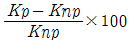
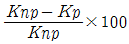
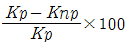
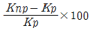
(정답률: 24%)
51. 5kVA, 조정 전압 220V인 3상 유도 전압 조정기의 2차 정격 전류 [A]는 약 얼마인가?
- 25.25
- 21.04
- 16.12
- 13.12
(정답률: 21%)
52. 유도전동기의 역상제동의 상태를 크레인이나 권상기의 강하시에 이용하고, 속도제한의 목적에 사용되는 경우의 제동방법은?
- 발전제동
- 유도제동
- 회생제동
- 단상제동
(정답률: 20%)
53. 3상 직권 정류자 전동기의 중간 변압기의 사용 목적이 아닌 것은?
- 실효 권수비의 조정
- 정류 전압의 조정
- 경부하 때 속도의 이상 상승 방지
- 직권 특성을 얻기 위하여
(정답률: 27%)
54. 3상 유도 전동기에서 2차측 저항을 2배로 하면 그 최대 토크는 몇 배가 되는가?
- 2배
- 1/2배
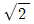
배- 변하지 않는다.
(정답률: 31%)
55. 직류 전동기의 회전수는 자속이 감소하면 어떻게 되는가?
- 불변이다.
- 정지한다.
- 저하한다.
- 상승한다.
(정답률: 31%)
56. 6극 파권의 전기자가 도체 250개로 되어 있다. 매분 1200 회전한다고 하면 유도 기전력을 600[V]로 하는 데 필요한 자속은 몇 [Wb]인가?
- 0.04
- 0.16
- 0.25
- 0.31
(정답률: 31%)
57. 변압기의 기름으로서 갖추어야 할 조건이 아닌 것은?
- 절연저항 및 절연내력이 적을 것
- 인화점이 높고 응고점이 낮을 것
- 비열이 커서 냉각 효과가 클 것
- 고온도에서도 석출물이 생기거나 산화하지 않을 것
(정답률: 43%)
58. 동기 주파수 변환기의 주파수 f1 및 f2 계통에 접속되는 양 극을 p1 , p2 라 하면 다음 어떤 관계가 성립 되는가?
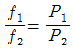
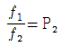
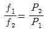
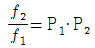
(정답률: 42%)
59. 변압기에서 부하에 관계없이 자속만을 만드는 전류는?
- 철손전류
- 자화전류
- 여자전류
- 교차전류
(정답률: 38%)
60. 변압기의 임피던스 전압이란?
- 단락 전류에 의한 변압기 내부 전압 강하
- 정격 전류시 2차측 단자전압
- 무부하 전류에 의한 2차측 단자전압
- 정격 전류에 의한 변압기 내부 전압 강하
(정답률: 30%)
4과목: 회로이론
61. 3r[Ω]인 6개의 저항을 그림과 같이 접속하고 평형 3상 전압 [V]를 가했을 때 전류 I몇 [A]인가? (단, r=2[Ω], V=
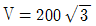
이다.)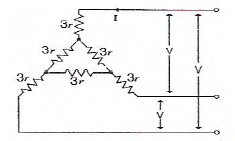
- 10
- 15
- 20
- 25
(정답률: 23%)
62. 그림과 같은 H형 회로의 4단자 정수에서 A값은?
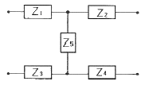
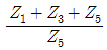
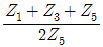
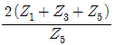
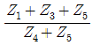
(정답률: 37%)
63. 그림에서 저항 20[Ω]에 흐르는 전류는 몇 [A]인가?
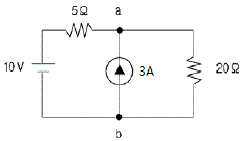
- 0.5
- 1.0
- 1.5
- 2.0
(정답률: 24%)
64. 저항 R=6[Ω]과 유도리액턴스 XL=8[Ω]이 직렬로 접속된 회로에서 v=200
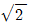
sinωt[V]인 전압을 인가하였다. 이 회로의 소비되는 전력[kW]은?- 3.2
- 2.2
- 1.2
- 2.4
(정답률: 37%)
65. 정현파 사이클의 수학적인 평균값은?
- 0.637×최대값
- 0.707×최대값
- 1.414×rms
- 0
(정답률: 38%)
66. 다음 그림의 등가 인덕턴스는 몇 [H]인가?
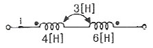
- 4
- 6
- 10
- 13
(정답률: 25%)
67. 그림과 같은 회로의 영상임피던스 Z01의 값[Ω]은?
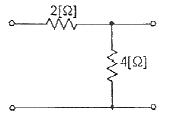
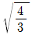
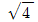
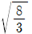
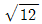
(정답률: 28%)
68. 직류전압인가시 저항 R, 인덕턴스 L, 콘덴서 C의 직렬회로에서 발생되는 과도현상이 비전동적이 되는 조건은?
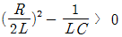
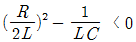
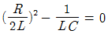
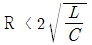
(정답률: 32%)
69. 그림과 같은 파형의 Laplace 변환식은?
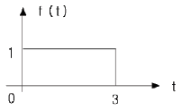
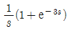
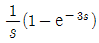
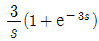
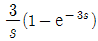
(정답률: 40%)
70. 그림과 같은 정상상태에 있을 때 시간 t=0에서 스위치 s를 열 때 흐르는 전류는?
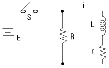
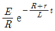
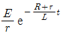
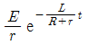
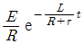
(정답률: 27%)
71. 3상 회로에 있어서 대칭분 전압이 V0=-8+j [V], V1=6-j8 [V], V2=8+j12 [V]일 때 a상의 전압[V]은?
- 6+j7
- 8+j6
- 3+j12
- 6+j12
(정답률: 40%)
72. 기본파의 60%인 제3고조파와 80%인 제5고조파를 포함하는 전압파의 왜형률은?
- 1
- 10
- 5
- 0.3
(정답률: 35%)
73. 주어진 시간함수 f(t)=3u(t)+2e-t 일 때 라플라스변환한 함수 F(s)는?
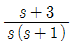
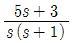
(정답률: 42%)
74. 그림과 같은 회로에서 단자 ab 사이의 합성 저항은 몇 [Ω]인가?
- r
- 3/2 r
- 1/2 r
- 3r
(정답률: 28%)
75. 전압 200V의 3상 회로에 그림과 같은 평형부하를 접속했을 때 선전류는 몇 [A]인가? (단, r = 9 [Ω], = 4[Ω]이다.)
- 48.1
- 38.5
- 28.9
- 115.5
(정답률: 24%)
76. 다음의 대칭 다상 교류에 의한 회전 자계 중 잘못된 것은?
- 대칭 3상 교류에 의한 회전자계는 원형 회전자계이다.
- 회전자계의 회전속도는 일정 각속도이다.
- 대칭 2상 교류에 의한 회전자계는 타원형 회전자계이다.
- 3상 교류에서 어느 두 코일의 전류의 상순을 바꾸면 회전자계의 방향도 바뀐다.
(정답률: 26%)
77. 파고율 및 파형률이 모두 1.0인 파형은?
- 구형파
- 삼각파
- 정현파
- 반원파
(정답률: 44%)
78. 그림과 같은 R 과 C의 병렬회로에서 C가 변화할 때의 임피던스 의 벡터 궤적은 어떻게 되는가?
- 원점을 통하는 반원이 된다.
- 원점을 통하지 않는 반원이 된다.
- 원점을 통하는 직선이 된다.
- 원점을 통하지 않는 직선이 된다.
(정답률: 34%)
79. 의 시간함수 f(t)는 어느 것인가?
- 2e-t cos2t
- 2et cos2t
- 2e-t sin2t
- 2et sin2t
(정답률: 30%)
80. 그림과 같은 회로에서 입력을 V1(s), 출력을 V2(s)라 할 때 전압비 전달함수는?
(정답률: 40%)
5과목: 전기설비
81. 지중 선로를 직접 매설식에 의하여 시설하는 경우 매설 깊이는 차량 기타 중량물의 압력을 받을 우려가 있는 장소에서는 몇 [m]이상으로 하여야 하는가?
- 0.6
- 1.2
- 2.4
- 4.0
(정답률: 47%)
82. 다음 중 가공 전선로의 지지물에 시설하는 지선의 시설 기준으로 알맞은 것은?
- 지선의 안전율은 1.2 이상일 것
- 소선은 최소 5가닥 이상의 연선일 것
- 지중부분 및 지표상 60cm까지의 부분은 아연도금을 한 철봉 등 부식하기 어려운 재료를 사용할 것
- 도로를 횡단하여 시설하는 지선의 높이는 일반적으로 지표상 5m 이상으로 할 것
(정답률: 40%)
83. 154kV 가공전선을 사람이 쉽게 들어갈 수 없는 산지에 시설하는 경우 전선의 지표상 높이는 몇 [m] 이상으로 하여야 하는가?
- 5.0
- 5.5
- 6.0
- 6.5
(정답률: 29%)
84. 다음 중 수소냉각식 발전기 등의 시설기준으로 옳지 않은 것은?
- 발전기에 붙인 유리제의 점검 창 등은 쉽게 파손될 수 있는 구조로 할 것
- 발전기안의 수소의 압력을 계측하는 장치 및 그 압력이 현저히 변동한 경우에 이를 경보하는 장치를 시설할 것
- 수소를 통하는 관은 수소가 대기압에서 폭발하는 경우에 생기는 압력에 견디는 강도를 가질 것
- 발전기 안의 수소의 온도를 계측하는 장치를 시설할 것
(정답률: 46%)
85. 백열전등 또는 방전등에 전기를 공급하는 옥내의 전로의 대지 전압은 몇 [V] 이하로 하여야 하는가?
- 120
- 150
- 200
- 300
(정답률: 45%)
86. 폭연성 분진 또는 화약류의 분말이 전기설비가 발화원이 되어 폭발할 우려가 있는 곳에 시설하는 저압옥내배선의 공사방법으로 옳은 것은?
- 애자사용공사
- 캡타이어 케이블공사
- 합성수지관공사
- 금속관공사
(정답률: 38%)
87. 직류 귀선은 귀선용 레일간 및 레일의 바깥쪽 몇 cm 이내에 시설하는 부분 이외에는 대지로부터 절연하여야 하는가?
- 15
- 20
- 25
- 30
(정답률: 29%)
88. 직류 귀선의 궤도 근접 부분이 금속제 지중 관로와 1km안에 접근하는 경우에는 지중관로에 대한 어떤 장해를 방지하기 위한 조치를 취하여야 하는가?
- 전파에 의한 장해
- 전류누설에 의한 장해
- 전식작용에 의한 장해
- 토양붕괴에 의한 장해
(정답률: 38%)
89. 고압의 계기용변성기의 2차측 전로의 접지공사로 가장 알맞은 것은?
- 제1종 접지공사
- 제2종 접지공사
- 제3종 접지공사
- 특별 제3종 접지공사
(정답률: 33%)
90. 배류접속 시설시 강제 배류기용 전원장치의 설명중 올바르지 않은 것은?
- 변압기는 절연 변압기이어야 한다.
- 귀선에서 강제배류기를 거쳐 금속제 지중 관로로 통하는 전류를 저지하는 구조이어야 한다.
- 강제배류기를 보호하기 위하여 적정한 과전류 차단기를 시설하여야 한다.
- 강제 배류기는 제2종 접지를 한 금속제 외함 기타 견고한 함에 넣어서 사람 접촉이 없게 한다.
(정답률: 38%)
91. 지중전선로에서 관, 암거, 기타 지중전선을 넣은 방호장치의 금속제 부분 또는 지중전선의 금속체 피복의 접지는 제 몇 종 접지공사를 하여야 하는가? (단, 방호장치의 금속제 부분에는 케이블을 지지하는 금구류를 제외한다.)
- 제1종 접지공사
- 제2종 접지공사
- 제3종 접지공사
- 특별 제3종 접지공사
(정답률: 48%)
92. 수력발전소의 발전기 내부에 고장이 발생하였을 때 자동적으로 전로로부터 차단하는 장치를 시설하여야 하는 발전기 용량은 몇 [kVA] 이상인 것인가?
- 3000
- 5000
- 8000
- 10000
(정답률: 31%)
93. 일반적으로 가공전선로의 지지물에 시설하는 통신선과 고압 가공전선 사이의 이격거리는 몇 cm 이상이어야 하는가?
- 40
- 60
- 80
- 100
(정답률: 29%)
94. 사용전압이 380V인 저압 보안공사에 사용되는 경동선은 그 지름이 최소 몇 [mm]이상의 것을 사용하여야 하는가?
- 2.0
- 2.6
- 4.0
- 5.0
(정답률: 11%)
95. 특별고압 가공전선로의 경가나은 지지물이 철탑인 경우 몇 [m] 이하이어야 하는가? (단, 단주가 아닌 경우이다.)
- 400
- 500
- 600
- 700
(정답률: 37%)
96. 사용전압 154kV의 가공전선과 식물 사이의 이격거리는 최소 몇 [m]이상이어야 하는가?
- 2.0
- 2.6
- 3.2
- 3.8
(정답률: 28%)
97. 다음 ( )안에 들어갈 내용으로 알맞은 것은?
- 차단장치
- 제어장치
- 단락장치
- 자물쇠장치
(정답률: 33%)
98. 다음 중 옥내에 시설하는 고압용 이동전선으로 가장 알맞은 것은?
- 2.6mm 연동선
- 비닐 캡타이어 케이블
- 고압용 제3종 클로로프렌 캡타이어 케이블
- 600V 고무절연전선
(정답률: 37%)
99. 전로의 사용전압이 380V인 저압 전로의 전선 상호간 및 전로와 대지간의 절연저항은 개폐기 또는 과전류차단기로 구분할 수 있는 전로마다. 몇 [MΩ] 이상이어야 하는가?
- 0.1
- 0.2
- 0.3
- 0.4
(정답률: 30%)
100. 가공인입선 및 수용장소의 조영물의 옆면 등에 시설하는 전선으로서 그 수용장소의 인입구에 이르는 부분의 전선을 무엇이라고 하는가?
- 옥외배선
- 옥측배선
- 인입선
- 배전간선
(정답률: 43%)